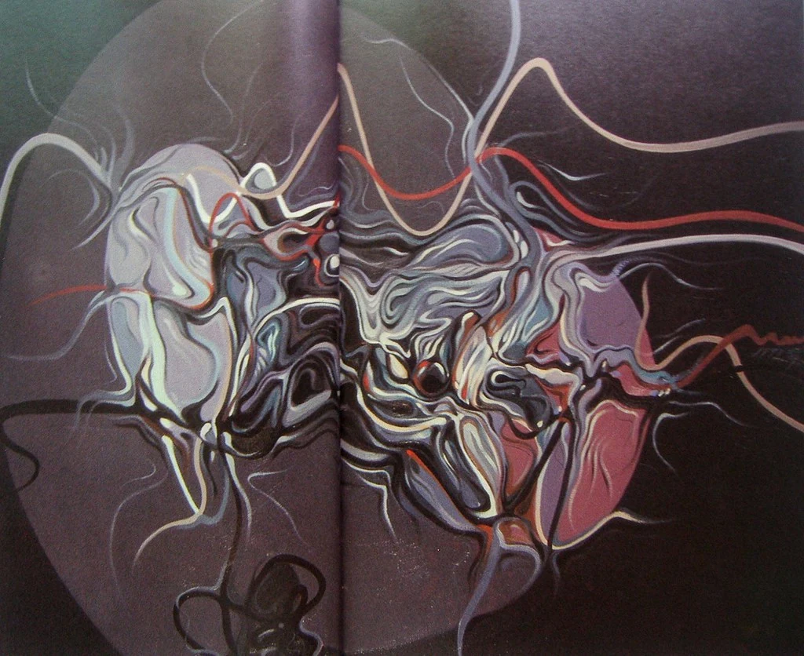

내면 풍경 No.9
- 작품명
- 내면 풍경 No.9
- 연도
- 1997
- 크기
- 50F
이미지 설명(화면에 보이는 대로 적은 것이며 작가의 설명이 아님)
짙은 보랏빛 검은 바탕 위에 회청색과 유백색이 엮인 가로 방향의 형체가 있고, 그 뒤로 회보라색과 분홍색의 원형이 희미하게 보인다. 붉은색과 베이지색의 긴 선 몇 가닥이 화면을 가로지르며, 중앙에는 중앙 이음선이 하나 있다.

짙은 보랏빛 검은 바탕 위에 회청색과 유백색이 엮인 가로 방향의 형체가 있고, 그 뒤로 회보라색과 분홍색의 원형이 희미하게 보인다. 붉은색과 베이지색의 긴 선 몇 가닥이 화면을 가로지르며, 중앙에는 중앙 이음선이 하나 있다.